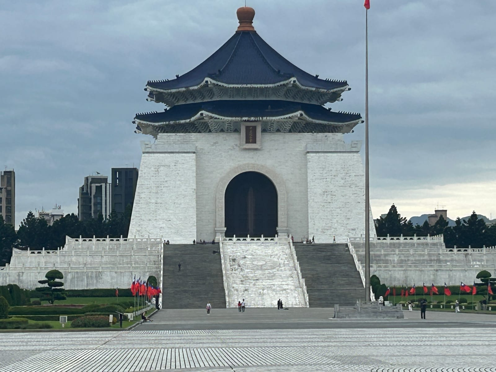
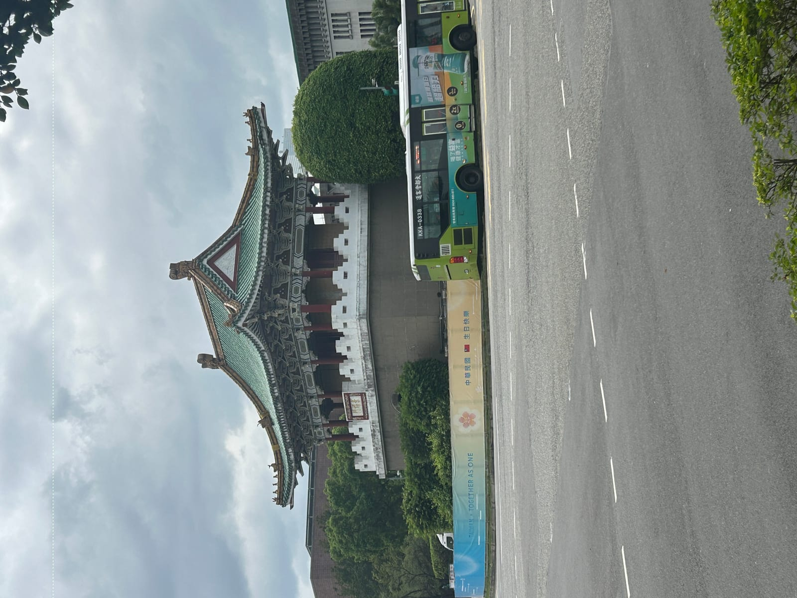
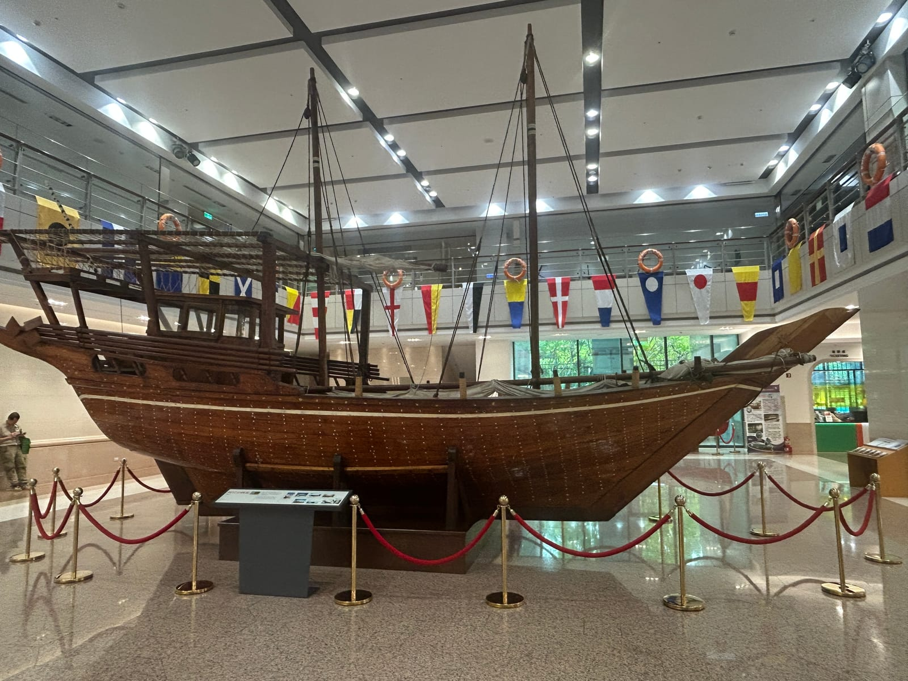

來台北玩，大家都知道「中正紀念堂」，但其實這整片開闊的場域正式名字叫自由廣場——一座五拱的大牌樓、兩棟氣派的國家兩廳院，再加上白牆藍瓦的紀念堂主體，圍出一塊市中心難得的大廣場。重點是完全免費、交通超方便，還能看一場整點的衛兵交接。這篇就帶你把自由廣場本體跟周邊幾個順遊點一次走過。
自由廣場有什麼
一進牌樓，眼前就是一塊非常開闊的廣場，很適合放慢腳步。整個區域大致由這幾個部分組成：
| 區塊 | 看頭 |
|---|---|
| 自由廣場牌樓 | 五拱藍瓦大門，招牌打卡點 |
| 中正紀念堂 | 白牆藍瓦主體、大階梯、整點衛兵交接 |
| 國家戲劇院 | 廣場左側，紅柱金瓦的宮殿式劇院 |
| 國家音樂廳 | 廣場右側，與戲劇院對稱的兩廳院 |
| 庭園水池 | 兩側中式庭園，散步、拍照、餵魚 |
動線很單純：從牌樓進來，先在廣場上拍張全景，再往紀念堂方向走，兩側順道逛逛兩廳院與庭園，一圈下來很舒服。
中正紀念堂與衛兵交接
廣場正對面那棟白牆藍頂、要爬一長段階梯才上得去的，就是中正紀念堂。爬上階梯後，大廳裡有一尊巨大的坐姿銅像，兩旁各站著一位紋風不動的三軍儀隊衛兵。
來這裡最不能錯過的，就是衛兵交接儀式。儀隊踏著整齊劃一的步伐、俐落轉槍，全程幾分鐘一氣呵成，是很多外國遊客專程排時間來看的重頭戲。
小提醒：交接大約每個整點進行一次（開放時段內），想看的話記得抓準時間、提早幾分鐘去卡位。確切時間與開放狀況，出發前查一下官方公告最保險。
樓下還有展廳與藝廊，吹冷氣、看展覽，很適合安插在行程中段。

順遊：牌樓外還有這些
自由廣場最方便的地方，就是周邊走路就到好幾個點，可以串成半天的輕鬆路線。
- 景福門（東門）：往中山南路、凱達格蘭大道口方向走，就會看到這座紅牆灰瓦的老城門。它是清代台北府城僅存的城門之一，矗立在車水馬龍的圓環中央，很有時空交錯的味道。
- 長榮海事博物館：同樣在中山南路上、離自由廣場走路就到，而且免門票、免費參觀。這是長榮集團張榮發基金會設立的博物館，館內以精緻的船舶模型與航海、海洋相關展示為主，從古代帆船到現代貨櫃輪都有，對喜歡船、喜歡海的大人小孩來說很好逛。開放時間出發前查一下官方公告比較保險。
- 國家圖書館：就在中正紀念堂對面（中山南路上），是全台最大的圖書館。路過時看看這棟莊重的建築，想吹冷氣歇腳的話也可入內。


交通與實用資訊
- 怎麼到：搭台北捷運到中正紀念堂站（淡水信義線／松山新店線交會），從松山新店線的 5 號出口上來，正好就是自由廣場牌樓，超級好認。
- 開放時間：戶外廣場全天開放、免費；紀念堂主體與展廳有固定開放時段（通常早上到傍晚，偶有休館），出發前查一下官方公告比較保險。
- 怎麼安排：這裡本身一到兩小時就能逛完，很適合跟龍山寺、西門町、永康街等鄰近點串成一天的台北市區散步路線。而且自由廣場、長榮海事博物館、國家圖書館都免門票，整條散步路線幾乎零花費，CP 值超高。
- 拍照：牌樓逆光時下午的光線最美；雨後夜晚打燈的紀念堂倒影也很有看頭。
自由廣場的好，就在於「輕鬆」：免門票、交通方便、半天就能收穫滿滿，第一次來台北或帶長輩小孩，都很適合排進去。
想順便把台北的景點、體驗或交通票券一次訂好，推薦這個在 KKday 上的熱門行程：
祝你在台北走得愜意，玩得開心 🐾